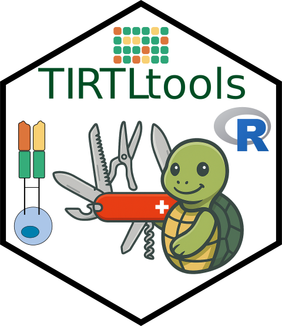
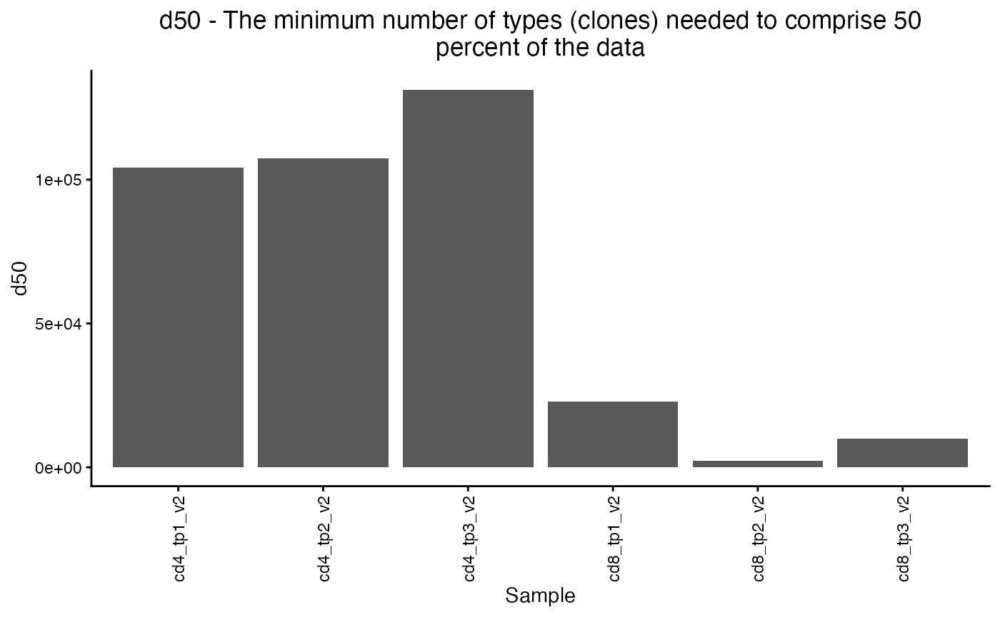
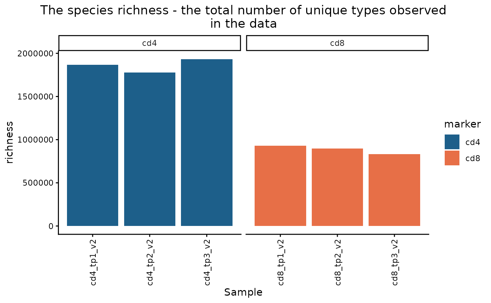
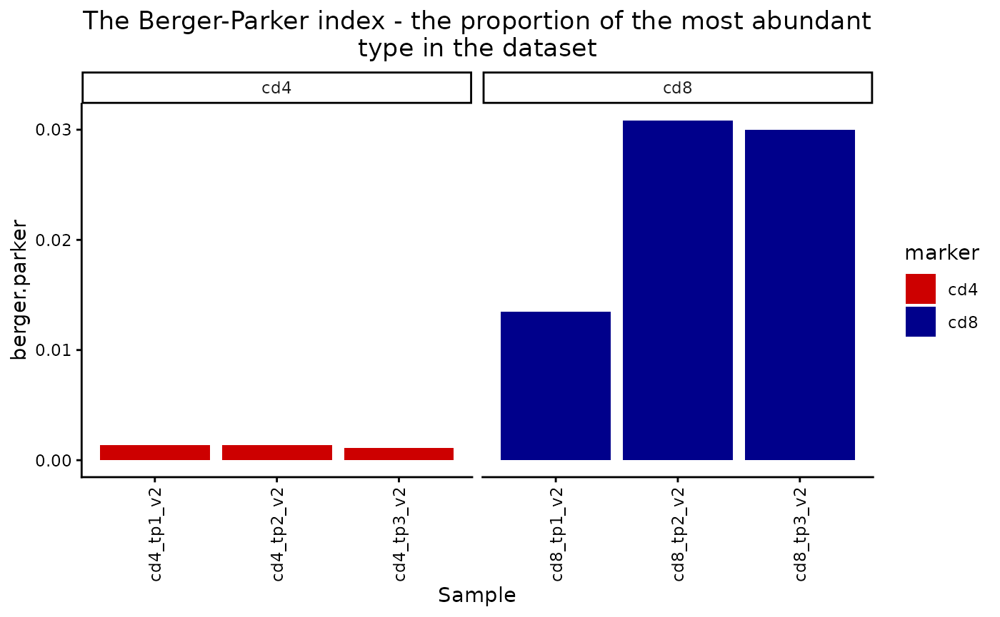
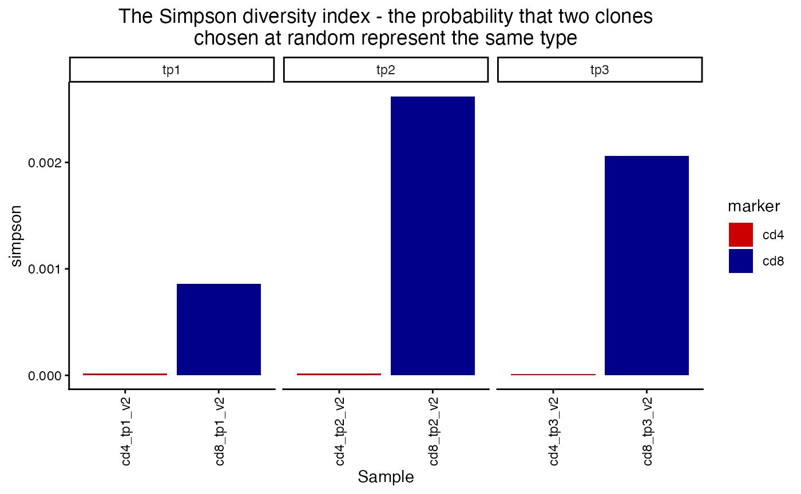
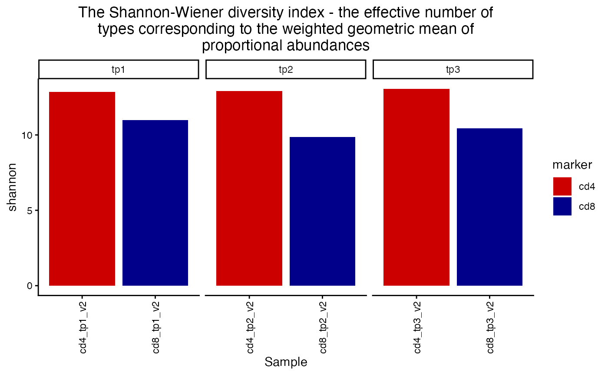
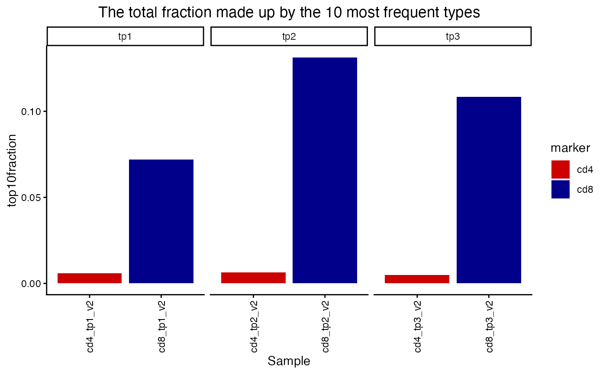

Estimating TCR Repertoire diversity
2025-10-31
summarizing_diversity.RmdTIRTLtools has a number of built-in metrics for repertoire diversity estimation.
We start by loading an example TIRTLseq dataset of some CD4/8-isolated samples from COVID-infected patients at a few timepoints.
library(TIRTLtools)
library(dplyr)
library(rmarkdown)
library(ggplot2)
folder = system.file("extdata/SJTRC_TIRTL_seq_longitudinal", package = "TIRTLtools")
dir(folder)## [1] "cd4_tp1_v2_pseudobulk_TRA.tsv.gz" "cd4_tp1_v2_pseudobulk_TRB.tsv.gz"
## [3] "cd4_tp1_v2_TIRTLoutput.tsv.gz" "cd4_tp2_v2_pseudobulk_TRA.tsv.gz"
## [5] "cd4_tp2_v2_pseudobulk_TRB.tsv.gz" "cd4_tp2_v2_TIRTLoutput.tsv.gz"
## [7] "cd4_tp3_v2_pseudobulk_TRA.tsv.gz" "cd4_tp3_v2_pseudobulk_TRB.tsv.gz"
## [9] "cd4_tp3_v2_TIRTLoutput.tsv.gz" "cd8_tp1_v2_pseudobulk_TRA.tsv.gz"
## [11] "cd8_tp1_v2_pseudobulk_TRB.tsv.gz" "cd8_tp1_v2_TIRTLoutput.tsv.gz"
## [13] "cd8_tp2_v2_pseudobulk_TRA.tsv.gz" "cd8_tp2_v2_pseudobulk_TRB.tsv.gz"
## [15] "cd8_tp2_v2_TIRTLoutput.tsv.gz" "cd8_tp3_v2_pseudobulk_TRA.tsv.gz"
## [17] "cd8_tp3_v2_pseudobulk_TRB.tsv.gz" "cd8_tp3_v2_TIRTLoutput.tsv.gz"
ts_data = load_tirtlseq(folder, meta_columns = c("marker", "timepoint", "version"), sep = "_")
## these files are named (marker)_(timepoint)_(version)_etc.tsv.gzWe offer the following diversity metrics/indices:
-
simpson- The Simpson diversity index (https://en.wikipedia.org/wiki/Diversity_index#Simpson_index). This equals the probability that two entities taken at random from the dataset represent the same type. It is the inverse of the Hill number of order 2. -
gini- The Gini index/coefficient (https://en.wikipedia.org/wiki/Gini_coefficient). -
gini.simpson- The Gini-Simpson index (https://en.wikipedia.org/wiki/Diversity_index#Gini%E2%80%93Simpson_index). Equal to 1-Simpson_index. This equals the probability that two entities taken at random from the dataset represent different types. -
inv.simpson- The Inverse-Simpson index - i.e. the reciprocal of the Simpson index, which measures the effective number of types when the weighted arithmetic mean is used to calculate diversity. It is equivalent to the Hill number of order 2. (https://en.wikipedia.org/wiki/Diversity_index#Inverse_Simpson_index) -
shannon- The Shannon diversity index, also known as the Shannon-Wiener index or Shannon entropy. It is equivalent to the Renyi entropy when ‘q’ = 1. (https://en.wikipedia.org/wiki/Diversity_index#Shannon_index) -
berger.parker- The Berger-Parker index, i.e. the proportion of the most abundant type in the dataset. (https://en.wikipedia.org/wiki/Diversity_index#Berger%E2%80%93Parker_index) -
richness- The species richness, i.e. the total number of unique types observed in the data (https://en.wikipedia.org/wiki/Diversity_index#Richness). -
d50- The minimum number of types (clones) needed to comprise 50 percent of the data. -
dXX- The minimum number of types (clones) needed to comprise XX percent of the data. -
renyi- The Renyi entropy, a generalization of Shannon diversity/entropy for values of ‘q’ other than 1. The formula for Renyi entropy is undefined at q=1, but it is defined as its limit, which equals the Shannon entropy. When q=0, it is simply the natural logarithm of the richness or total number of types. When q=Inf, it is defined by its limit, which is equal to the negative of the natural logarithm of the proportion of the most abundant type. (https://en.wikipedia.org/wiki/Diversity_index#R%C3%A9nyi_entropy) -
hill- The Hill numbers of order q, also known as the true diversity or the effective number of types. This is the number of equally abundant types needed for the average proportional abundance of types to equal that observed in the dataset. The order ‘q’ defines the exponent used in the formula to define the ‘generalized mean’ of the proportional abundances.-
q = 2corresponds to the arithmetic mean (https://en.wikipedia.org/wiki/Arithmetic_mean). -
q = 1corresponds to the geometric mean (https://en.wikipedia.org/wiki/Geometric_mean). -
q = 0corresponds to the harmonic mean (https://en.wikipedia.org/wiki/Harmonic_mean). - When
q = Inf, it is defined by its limit, which is the inverse of the proportion of the most abundant type. - In general, as
qincreases, less weight is given to rarer species. (https://en.wikipedia.org/wiki/Diversity_index#Effective_number_of_species_or_Hill_numbers)
-
For a full list of the currently available metrics, run
get_all_div_metrics().
## [1] "simpson" "gini" "gini.simpson" "inv.simpson"
## [5] "shannon" "berger.parker" "richness" "d50"
## [9] "dXX" "renyi" "hill" "top10fraction"
## [13] "top100fraction" "topNfraction"
div = calculate_diversity(ts_data, chain = "beta")##
## -- Calculating diversity indices for sample 1 of 6.
## -- Calculating diversity indices for sample 2 of 6.
## -- Calculating diversity indices for sample 3 of 6.
## -- Calculating diversity indices for sample 4 of 6.
## -- Calculating diversity indices for sample 5 of 6.
## -- Calculating diversity indices for sample 6 of 6.
plot_diversity(div, metric = "d50")
The plot_diversity() function returns a ggplot object
that contains the sample metadata in ts_data$meta, so we
can use ggplot to make the plot more informative.
plot_diversity(div, metric = "richness") +
facet_wrap(~marker, scales = "free_x") +
aes(fill=marker)
plot_diversity(div, metric = "berger.parker") +
facet_wrap(~marker, scales = "free_x") +
aes(fill=marker) +
scale_fill_manual(values = c("red3", "blue4"))## Scale for fill is already present.
## Adding another scale for fill, which will replace the existing scale.
plot_diversity(div, metric = "simpson") +
facet_wrap(~timepoint, scales = "free_x") +
aes(fill=marker) +
scale_fill_manual(values = c("red3", "blue4"))## Scale for fill is already present.
## Adding another scale for fill, which will replace the existing scale.
plot_diversity(div, metric = "shannon") +
facet_wrap(~timepoint, scales = "free_x") +
aes(fill=marker) +
scale_fill_manual(values = c("red3", "blue4"))## Scale for fill is already present.
## Adding another scale for fill, which will replace the existing scale.
plot_diversity(div, metric = "top10fraction") +
facet_wrap(~timepoint, scales = "free_x") +
aes(fill=marker) +
scale_fill_manual(values = c("red3", "blue4"))## Scale for fill is already present.
## Adding another scale for fill, which will replace the existing scale.